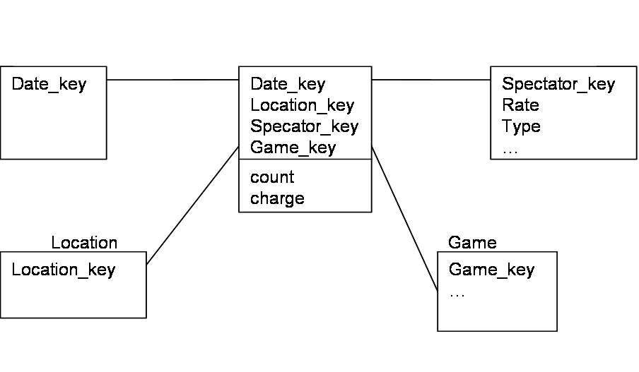
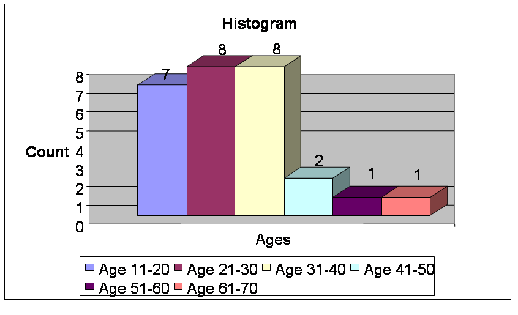

Solutions to Assignment 2: Data Warehousing / Data Preparation
Start date 28 January, due 4 February beginning of class.
Exercises from the Book
Complete the following exercises from the book Chapters 2, 3.
-
2.5 a): Star Schema. Some people missed that spectator was defined
to have a rate and type - attributes weren't given for others.

(1 point)
b) slice/dice on spectator.type=student and location=GM_Place, year=2000;
then Roll-up to remove game, date. (1 point)
- 2.9 a) Many good examples. Most were based on fine time granularities,
but there are others - location granularity was another. (1 point)
- 3.2: See Han Section 3.2.1. I was looking to see some level of
independent understanding. (1 point)
- 3.3 a) Bin and means: (13+15+16)/3 = 15, (16+19+20)/3 = 18, 21,
24, 27, 34, 35, 40, 56; replace each value by mean: 15, 15, 15, 18,
18, 18, 21, 21, 21, ... (0.75 point)
b) One approach would be to identify
values that differed significantly from their bin mean. One problem
is that an item may be far from its bin mean, but closer to the mean
of another bin (e.g., 46) - so distance from closest bin would make
more sense. "Significant" is a challenge, though - an age of 7 would
certainly seem an outlier in this data, but 46 doesn't seem to be -
yet both are 6 from the nearest bin. (0.25 point)
- (0.5 point each)
3.5 a) norm(x) = x-13/(70-13): 0.39
b) norm(x) = (x-avg) / sdev = (35 - 30) / 13 = 0.38
c) norm(x) = x/100 = .35
d) My preference would be decimal scaling, as it preserves concepts
of minimum and maximum age and relative distance. However, this would
fail if anyone in the data set were over 100, since all ages would now
be far from the maximum normalized value.
- 3.7 a) Several possible answers, depending on what you
chose as the base age. One is (courtesy Mike Hilligoss):

(1 point)